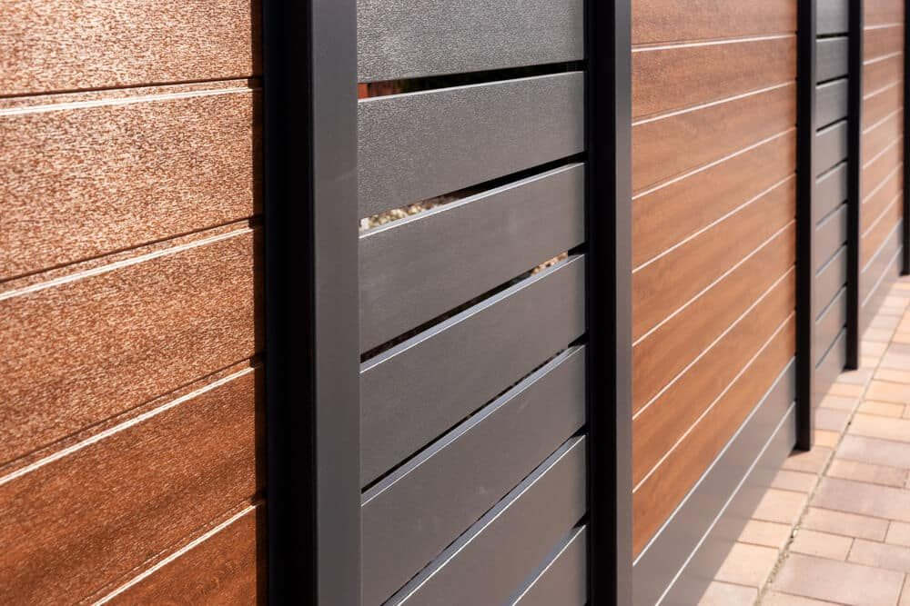
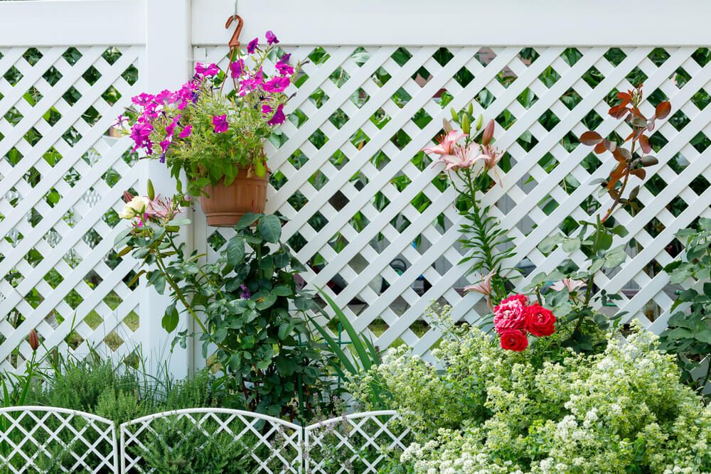

In This Guide
- Color, lattice tops, planters, lighting, and climbing plants can all give a plain vinyl fence more personality.
- Vinyl rails are not built to carry heavy loads, so choose lightweight decor and hang items in a way that will not stress the panels.
- Heat, sun, and storm wind matter in Louisiana, since they weaken adhesives, fade paint, and turn hanging items into flying debris.
- Anything involving wiring, new gates, or structural changes is worth handing to a professional.
A vinyl fence is built to be low fuss, and plain white panels can look a little blank. A few smart touches turn it into part of the yard's design. The trick is choosing ideas that suit vinyl, which is smooth, lightweight, and sensitive to heat.
Here are design ideas from Big Easy Fence for a vinyl fence you already own or plan to add to a residential fence project, along with the limits that keep your decorating from causing damage.
Start With the Fence Itself: Color and Style
The biggest design choices are the ones made before any decor goes up. Color, texture, and panel style set the look, and everything else builds on them.
Color and Wood-Grain Finishes
White is the classic, but vinyl now comes in tan, gray, brown, and wood-grain finishes. Two-tone combinations, such as a light panel with darker posts, add contrast without extra effort. Our guide to picking the best vinyl fence color covers how tones look against different homes.

Painting vinyl is a bigger decision than it sounds. It needs paint made for vinyl, and dark colors absorb heat, which can warp the panels in strong sun. Check the manufacturer's guidance before you pick up a brush, and consider choosing a colored panel from the start.
Lattice Tops
A lattice band along the top adds a decorative pattern and can raise privacy while letting light and air through. Lattice also gives climbing plants something to hold.
Post Caps
Post caps finish off the top of each post and come in flat, pyramid, and decorative shapes. They are a quick way to make a plain fence look more intentional.
Decor Ideas for a Vinyl Fence
Once the fence is in place, these ideas add color, light, and greenery without much cost.
Planters and Hanging Baskets
Hanging baskets and planters bring in color and can grow flowers or herbs. Choose lightweight pots and hang them from hooks made for vinyl, not from a spot that puts weight on the top rail.

Lanterns and Lighting
Lanterns and string lights give a patio or yard a warm glow in the evening. Solar-powered lights are the simplest option because they need no wiring. Anything that needs a permanent electrical connection should be installed by a licensed electrician.
Climbing Plants and Trellises
Vines look great against a fence, but plants can hold moisture against vinyl and their weight can pull on panels. A freestanding trellis in front of the fence gives plants support without loading the vinyl itself.
Flags, Signs, and Garden Art
Seasonal flags, house numbers, and small pieces of garden art give the fence a personal touch. Keep them lightweight and easy to take down when the season changes.
A Statement Gate
A gate is one of the fence's focal points, and matching or contrasting hardware and a decorative top can set it apart. Gate work affects how the fence opens and closes, so it is worth planning with an installer.
Match the Decor to Your Yard
Good decor looks like it belongs. Before you buy anything, look at the fence in the context of the whole yard. Notice the color of the house trim, the plants you already have, and the time of day the fence sits in full sun.
Pick two or three accent colors and repeat them, such as the flower color in a basket and the shade of a lantern. Keep the rest neutral so the fence still reads as a clean backdrop. Louisiana sun is strong, so choose outdoor-rated materials that will not fade or crack within a season. Cheap plastic decor often looks tired quickly, while metal, glazed ceramic, and sturdy resin tend to hold up better.
What Vinyl Can and Cannot Carry
Vinyl is smooth and light, so it responds to decor differently from wood or metal. Keeping a few limits in mind prevents cracks, warping, and marks.
- Weight. Vinyl rails are not designed to support heavy planters or structures. Keep items light and spread them out.
- Adhesives. Adhesive strips and hooks can stick to clean, smooth vinyl, but heat and humidity weaken them and some leave residue. Test a hidden spot first and expect to replace them.
- Drilling and fasteners. Screws can crack vinyl, and they may affect a warranty. Ask the manufacturer or installer before adding anything that penetrates the panel.
- Heat. Dark decor absorbs sun and can make vinyl hot enough to soften or distort.
- Wind. Anything you hang catches wind. In storm season, take down flags, baskets, and lanterns so they do not damage the fence or become flying debris.
Try one idea on a single section before you decorate the whole fence. It is easier to adjust a small test than to fix marks or damage across a long run.
When to Get Help With the Bigger Ideas
Color swaps, planters, and solar lights are simple weekend projects. Wiring, new gates, taller panels, and layout changes are a different story. They affect how the fence holds up and whether it meets local rules, and a mistake can be costly to undo.
If you are weighing a new look for your yard, browse the fence types we install, or ask our team for a free estimate.
Ready to Give Your Vinyl Fence a Fresh Look?
Tell us what you have in mind for your yard, and we will talk through what works with your fence style.